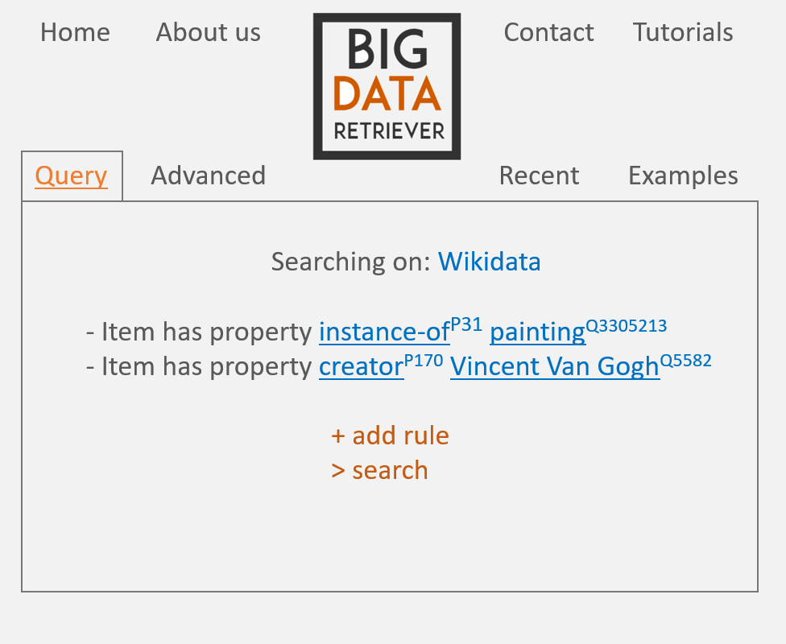
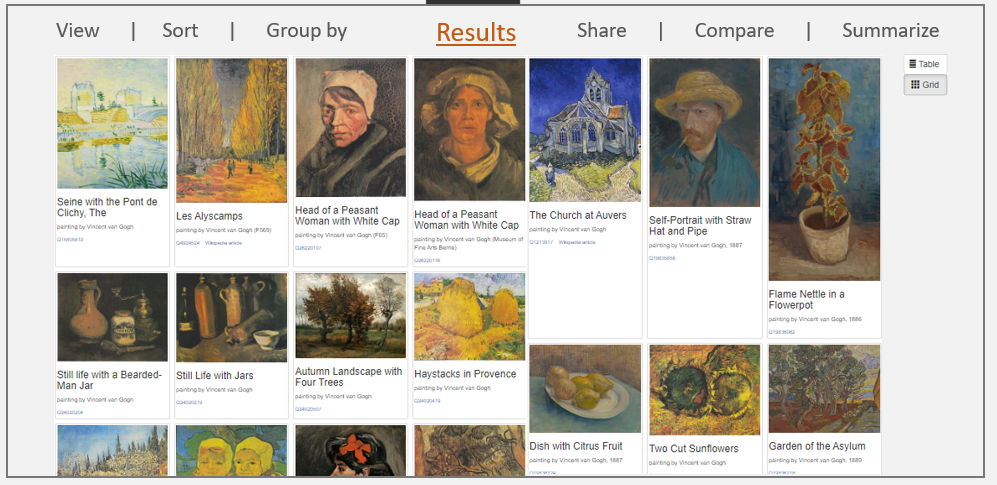

About
BIR- Big Data Retriever is a Web System that is able to query, compare, visualize, share,
summarize, large sets of data/knowledge and additional resources provided by Wikidata.
The platform will give the user access to everything that he finds of interest that is available
in the Wikidata collaboratively edited knowledge base, items and topics ranging from
1988 Summer Olympics, to love or Elvis Presley. Every item in this valuable collection of data is
uniquely identified by an unique number, making it possible for the concept to be translated without
favoring any language. The tool can for this reason easily recommend related information and similar
resources available in other languages. In the background, data will be processed in a distributed,
fast and reliable manner, using Hadoop MapReduce.
Roadmap and project progress
Done
10 Oct. : Project subject chosen - BIR
11 Oct. : Created project repo and public page (current page)
18 Oct. : Started work on Scholarly Report
19 Oct. : Wrote a basic RESTful API
19 Oct. : Decided on the underlying technologies to be used
19 Oct. : Made some basic diagrams for both architecture and use-case scenarios
24 Oct. : Diagrams done
25 Oct. : Started research (light reading) on Big Data techniques that might prove helpful
26 Oct. : Started work on public blog (current page)
09 Nov. : Wrapped up work on public page, just small adjustments left
09 Nov. : Reworked one of the diagrams to fit more use-cases
17 Nov. : Came up with another, more in-depth architecture diagram
17 Nov. : Decided against using RDF data in favour of JSON
26 Nov. : Finished Scholarly Report
26 Nov. : Finished public blog page
27 Nov. : Uploaded everything we have so far to the github repo
27 Nov. : Presentation...
To be done
by 30 Nov. : Get a small python module that can succesfully query the SparQL endpoint working
by 06 Dec. : Decide what other knowledge base to use other than Wikidata (DBPedia)
xy ???. : Implement the backend part
xy ???. : Implement the frontend part
xy ???. : Add (and thorougly test) every requested functionality
User Experience
The user can easily create a new query using the GUI, write one using advanced syntax, or choose from various examples and previously-searched queries.

Choosing a simple query provides autocomplete suggestions for items and properties, and displays their internal id.

The results can be displayed visually with thumbnail images, or as a list.

The results can also be grouped by location, spans of time or other preset filters.

The user can also compare the results of the most recent queries with another, newly-inputed one, and have this comparison displayed visually.

An usecase diagram is displayed below: